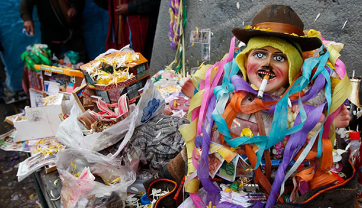
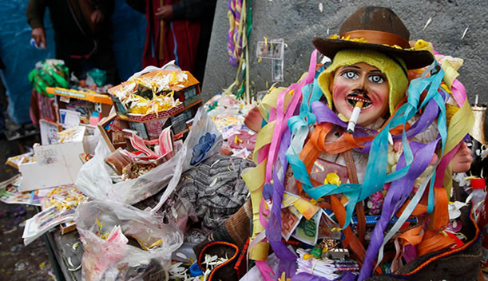

Las “alasitas” son miniaturas de todo tipo de objetos que se venden en mercados y ferias en varias ciudades de Bolivia al inicio de la época de lluvias, pero especialmente en La Paz el 24 de enero de cada año. « Alasita » es una palabra aymará que significa « compráme ».
Es una celebración a Ekeko, dios de la abundancia a quien se regala miniaturas representando los sueños que uno desea ver concretizados en el transcurso del año que empieza (una maleta para un viaje, un coche para tener uno al año, una bolsa de arroz para tener comida todo el año, .). Resultado de una creencia en la magia imitativa: cuando ya se posee la cosa en miniatura, será más fácil tenerlo en grande!
Mucho antes de la conquista española, vivía en el Altiplano un hombre aymará llamado Iqiqu. Era bajito, humilde, generoso y alegre. Su bondad era tal que donde iba, daba armonía a las existencias, cultivaba las buenas relaciones, reunía a los enamorados. Por otra parte daba consejos avisados y su sola presencia garantizaba días felices a todos.
Para mejorar todavía sus virtudes, “el Apu Qullana Qullo” (Dios el Padre Divino), que vivía en las alturas sagradas del « khuno Qullo » (Montana Sagrada), le regaló unas calidades maravillosas. Así logró realizar grandes hazañas, como mover piedras enormes, secar ríos enteros, abrir o desplazar montañas. Lo hizo con todo corazón, con todo su entusiasmo, todo le obedecía, y por esto mismo, la gente lo seguía sin vacilar.
La felicidad se acabó con la llegada del “Awqa” (el ser maligno) y de su ejército destructor. Su aspecto de joven bárbaro y su piel blanca se combinaban con su mente maligna. Tomando nota de los favores que recibía la gente que seguía Iqiqu, arruinó sus tierras, matando ferozmente a cada cual le resistía. Obtuvo la aprobación forzada de las mentes más débiles. Para que no lo capturen, Iqiqu fue a esconderse en otras regiones, cuidando siempre de no involucrar a las poblaciones de su alrededor, para que no sean las próximas victimas del Awqa. Un día, entró en un Ayllu (territorio político) donde se había reunido la gente para desarrollar un sistema de ayuda entre agricultores. Al mismo tiempo, Awqa y su ejército vinieron a sorprender la reunión. Para evitar la masacra de la gente, Iqiqu prefirió entregarse al Maligno.
Sin esperar a más, Awqa dio orden para que torturen al prisionero, y unas horas después, de desmembrarle. La cabeza, los brazos, las piernas, así como las demás partes de su cuerpo fueron entierradas en lugares diferentes y secretos del Altiplano para impedir una reunión futura de su cuerpo que daría vida de nuevo al benefactor.
Algunos ancianos creen que el tiempo de la reunión vendrá. Otros aseguran que ciertas partes de su cuerpo ya están en camino hasta « Wiñay Marca » (la ciudad eterna), donde esperan las demás partes del cuerpo de Iqiqu para por fin reunirse, víspera de la emancipación del pueblo aymará.

 
